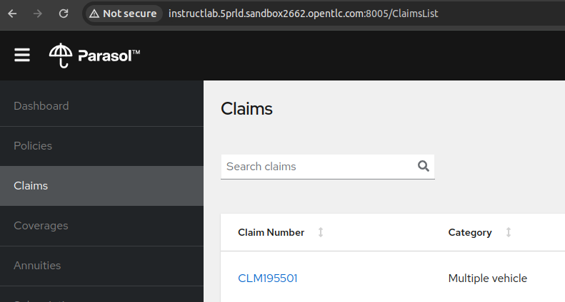
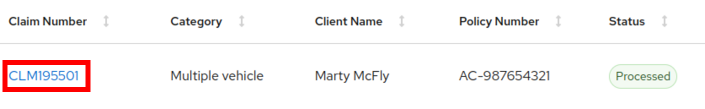

Lab Exercise: The Problem!
In this lab exercise, you deploy the Parasol Insurance application using Quarkus and test the chatbot by asking, "How much does it cost to repair a flux capacitor in a DeLorean?" You’ll notice that the chatbot gives a humorous, off-base answer, showing it doesn’t know about this fictional repair.
|
In this lab, you’ll be working with three terminals, each serving a distinct purpose:
|
-
Monitor the GPU:
-
Open the first terminal and execute the nvtop (NVIDIA TOP) command to immerse yourself in real-time GPU insights. This will allow you to keep a close watch on GPU utilization throughout the lab, ensuring you have a comprehensive understanding of your GPU’s performance.
[instruct@instructlab ~]$ nvtop
-
-
Set up your lab environment for the Parasol Insurance application and InstructLab:
-
Open the second terminal and begin by creating the
~/install.shscript usingvior any other editor of your choice to set up your lab environment.[instruct@instructlab ~]$ vi ~/install.sh #!/bin/bash cd ~ rm -rf ~/instructlab rm -rf ~/.cache/pip mkdir ~/instructlab cd ~/instructlab python -m venv venv #source venv source venv/bin/activate #Upgrade InstructLab pip install instructlab #Need to change linux_train.py # was: tokenizer.eos_token # change to: tokenizer.unk_token sed -i.bak 's/tokenizer.eos_token/tokenizer.unk_token/' ~/instructlab/venv/lib/python3.11/site-packages/instructlab/train/linux_train.py #Need to pip install after making the previous change pip install . #Need new llama_cpp_python for things to work properly #This runs a LONG time for some reason pip install --force-reinstall "llama_cpp_python[server]==0.2.79" --config-settings cmake.args="-DLLAMA_CUDA=on" #downgrade numpy or you'll get a breaking change to ilab training pip install 'numpy<2.0' # Getting instructlab qna.yaml for backtothefuture example mkdir ~/files curl -o ~/files/qna.yaml https://raw.githubusercontent.com/gshipley/backToTheFuture/main/qna.yaml # Now let's install the parasol insurance app # ensure we are in the home directory cd ~ # Install zip echo "installing zip" sleep 1 sudo dnf install zip -y # Install sdkman in order to get newer versions of Java and Maven. Then install Quarkus, Java, and Maven. echo "installing sdkman" sleep 1 curl -s "https://get.sdkman.io" | bash source "/home/instruct/.sdkman/bin/sdkman-init.sh" sdk install java 21.0.3-tem sdk install quarkus # Clone parasol app echo "cloning parasol-insurance" sleep 1 git clone https://github.com/rh-rad-ai-roadshow/parasol-insurance.git
-
Make the
~/install.shscript executable and run it. Please note that the script may take 10-15 minutes to finish executing.[instruct@instructlab ~]$ chmod +x install.sh [instruct@instructlab ~]$ ./install.sh Collecting instructlab Downloading instructlab-0.17.1-py3-none-any.whl (168 kB) ... ... ... remote: Total 267 (delta 56), reused 32 (delta 32), pack-reused 199 Receiving objects: 100% (267/267), 2.70 MiB | 26.33 MiB/s, done. Resolving deltas: 100% (86/86), done.
-
-
Initialise and set up the InstructLab:
-
Open the third terminal and navigate to the InstructLab directory:
[instruct@instructlab ~]$ cd instructlab
-
Activate the virtual environment:
[instruct@instructlab instructlab]$ source venv/bin/activate
-
Initialize InstructLab to set up a ready-to-use environment for your project. Respond to the interactive prompts as shown in the output below during the execution of the
ilab initcommand.[instruct@instructlab instructlab]$ ilab config init Found config.yaml in the current directory, do you still want to continue? [y/N]: y Welcome to InstructLab CLI. This guide will help you to set up your environment. Please provide the following values to initiate the environment [press Enter for defaults]: Path to taxonomy repo [taxonomy]: <press enter> Path to your model [models/merlinite-7b-lab-Q4_K_M.gguf]: Generating
config.yamlin the current directory... Initialization completed successfully, you're ready to start usingilab. Enjoy! -
Download the
merlinite model.[instruct@instructlab instructlab]$ ilab model download Downloading model from instructlab/merlinite-7b-lab-GGUF@main to models...
-
Serve the model and keep the model serving running in the background in the terminal.
[instruct@instructlab instructlab]$ ilab model serve INFO 2024-07-20 13:06:20,621 serve.py:51: serve Using model 'models/merlinite-7b-lab-Q4_K_M.gguf' with -1 gpu-layers and 4096 max context size.
-
-
Start the Parasol Insurance Application.
-
Switch back to the second terminal and edit the
~/.bashrcfile to add the following line.[instruct@instructlab ~]$ vi ~/.bashrc export PATH="$HOME/.sdkman/candidates/quarkus/current/bin:$PATH"
-
Change the directory to
~/parasol-insurance/app.[instruct@instructlab ~]$ cd ~/parasol-insurance/app
-
Reload the
~/.bashrcfile to apply the changes.[instruct@instructlab app]$ source ~/.bashrc
-
Verify the Quarkus installation by checking its version.
[instruct@instructlab app]$ quarkus --version Looking for the newly published extensions in registry.quarkus.io 3.12.3
-
Start the Quarkus development mode and ensure it continues running so you can access the Parasol Insurance application.
[instruct@instructlab app]$ quarkus dev [INFO] Scanning for projects... [INFO] [INFO] ---------------------< org.parasol:insurance-app >---------------------- ... ... -- Tests paused Press [e] to edit command line args (currently ''), [r] to resume testing, [o] Toggle test output, [:] for the terminal, [h] for more options>
-
Using your browser, navigate to the Parasol Insurance application, using the hostname provided in the "Your Showroom Host: <hostname>" information on the demo.redhat.com platform. Verify that the application is accessible on port
8005as shown in the screenshot below.
-
|
To ensure seamless access to the application, please open it in incognito mode if you encounter any issues while using a regular browser. |
-
Select the first claim as shown in the screenshot below.
 -
Tap on the chatbot logo nestled in the bottom right corner of the claims page. Pose the intriguing question, "How much does it cost to repair a flux capacitor in a DeLorean?" and watch as the chatbot gives a response that clearly shows it’s not familiar with this quirky detail.
-
Try asking again, and you’ll notice that the answer remains just as playful and elusive.
-
Head to the next section where you’ll tackle this challenge by training the chatbot. Using InstructLab, you’ll guide the Merlinite model through its paces, equipping it with the knowledge needed to provide more accurate answers. Let’s dive into the process and transform our chatbot’s responses together!